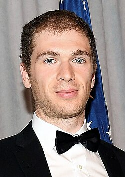

John Pardon | |
|---|---|
 Pardon receiving the 2017 Alan T. Waterman Award | |
| Born | June 1, 1989 |
| Alma mater | Princeton University (AB) Stanford University (PhD) |
| Known for | Solving Gromov's problem on distortion of knots Proof of the 3 dimensional case of Hilbert–Smith conjecture |
| Awards | Morgan Prize (2012) Alan T. Waterman Award (2017) Clay Research Award (2022) New Horizons in Mathematics Prize (2025) Fields Medal (2026) |
| Scientific career | |
| Fields | Mathematics |
| Institutions | Princeton University Simons Center for Geometry and Physics |
| Yakov Eliashberg | |
John Vincent Pardon (born June 1, 1989) is an American mathematician who works on geometry and topology.[1] He is primarily known for having solved Gromov's problem on distortion of knots, for which he received the 2012 Morgan Prize. He is a permanent member of the Simons Center for Geometry and Physics in Stony Brook, New York. He was awarded the Fields Medal in 2026.[2]
Pardon's mother, Joyce Eileen Maggio Pardon, was a math teacher. She introduced him to basic arithmetic, trigonometry, and calculus. His interest in math was also encouraged by his father, William Pardon, a mathematics professor at Duke University. When he was a high school student at the Durham Academy in Durham, North Carolina, Pardon took classes at Duke.[3]
Pardon was a three-time gold medalist at the International Olympiad in Informatics, in 2005, 2006, and 2007.[4] In 2007, he placed second in the Intel Science Talent Search competition, with a generalization to rectifiable curves of the carpenter's rule problem for polygons. In the project, he showed that every rectifiable Jordan curve in the plane can be continuously deformed into a convex curve without changing its length and without ever allowing any two points of the curve to get closer to each other.[5] He published this research in the Transactions of the American Mathematical Society in 2009.
Next, Pardon went to Princeton University and after his sophomore year he primarily took graduate-level mathematics classes there.[3] At Princeton, he solved a problem in knot theory posed by Mikhail Gromov in 1983 about whether every knot can be embedded into three-dimensional space with bounded stretch factor. He showed that on the contrary, the stretch factor of certain torus knots could be arbitrarily large. His proof was published in the Annals of Mathematics in 2011, and it earned him the Morgan Prize of 2012.[3][6][7] Pardon took part in a Chinese-language immersion program at Princeton, and was part of Princeton's team at an international debate competition in Singapore, broadcast on Chinese television. As a cello player, he was a two-time winner of the Princeton Sinfonia concerto competition. He graduated in 2011 and was the valedictorian.[3]
He went to Stanford University for his graduate studies. His accomplishments there included solving the three-dimensional case of the Hilbert–Smith conjecture. He completed his Ph.D. in 2015, under the supervision of Yakov Eliashberg,[8] and continued at Stanford as an assistant professor. In 2015, he was also appointed to a five-year term as a Clay Research Fellow.[6]
In the fall of 2016, he became a full professor of mathematics at Princeton University.[9] He is currently a permanent member of the Simons Center for Geometry and Physics in Stony Brook, New York. In 2023, he proved the MNOP conjecture, which posited an equivalence between two different curve enumeration invariants of Calabi–Yau threefolds. He is currently working on a book about the foundations of symplectic geometry.[10]
In 2017, Pardon received the National Science Foundation's Alan T. Waterman Award for his contributions to geometry and topology.[11]
He was elected to the 2018 class of fellows of the American Mathematical Society.[12] Also in 2018 he was an invited speaker at the International Congress of Mathematicians (ICM) in Rio de Janeiro. In 2022 he was awarded the Clay Research Award.[13] In 2025, he was awarded the New Horizons in Mathematics Prize.[14]
Pardon was awarded the Fields Medal at ICM Philadelphia 2026 for "achievements in symplectic geometry including new approaches to virtual fundamental cycles, Fukaya categories of certain manifolds and counting holomorphic curves, and for his contributions to other areas of geometry and topology, including group actions on 3-manifolds and knot theory".[2]
.jpg){kind=link}